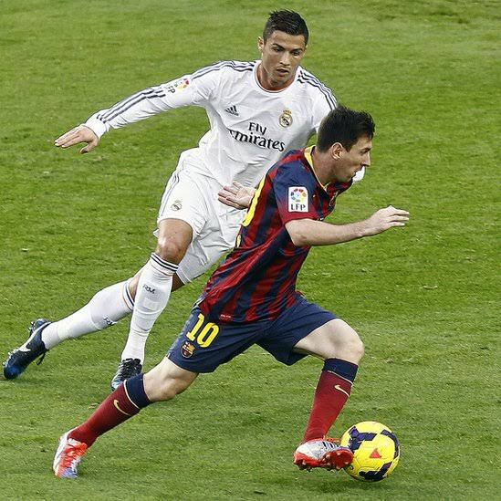
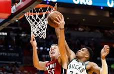

¡Gran final del campeonato mundial este fin de semana!
Descubre todos los detalles, horarios y análisis previos al gran encuentro del año.
Leer noticia completaDescubre todos los detalles, horarios y análisis previos al gran encuentro del año.
Leer noticia completa
Resumen detallado de todos los partidos disputados ayer.
Leer más
Mira las jugadas más espectaculares de la noche.
Leer más
Un partido histórico que duró más de cuatro horas.
Leer más